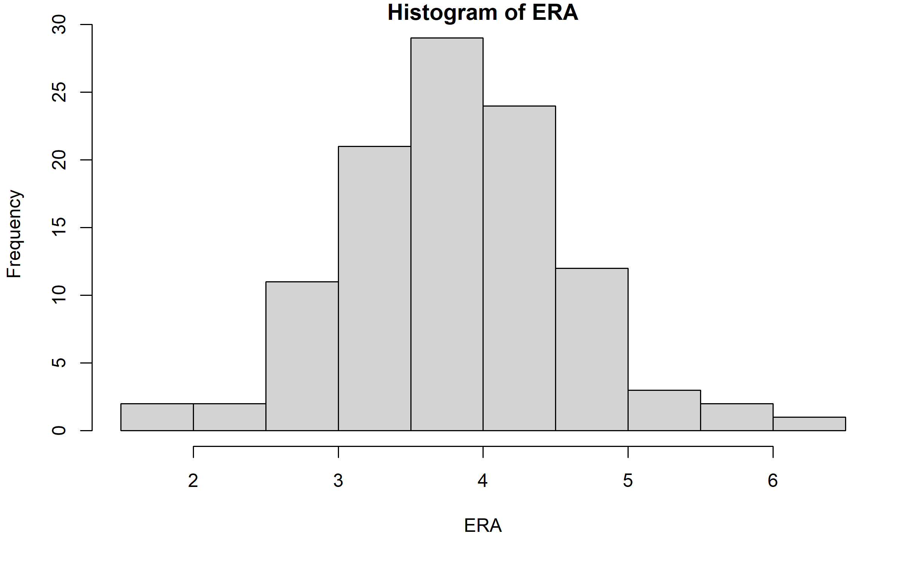
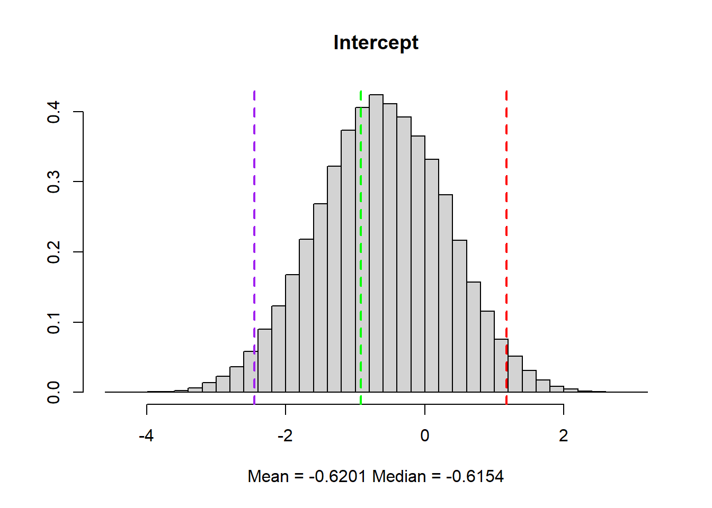
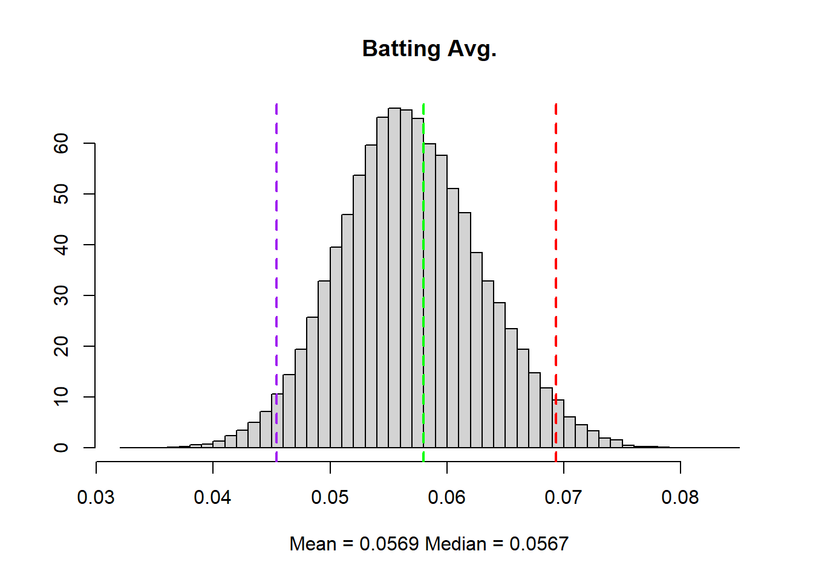
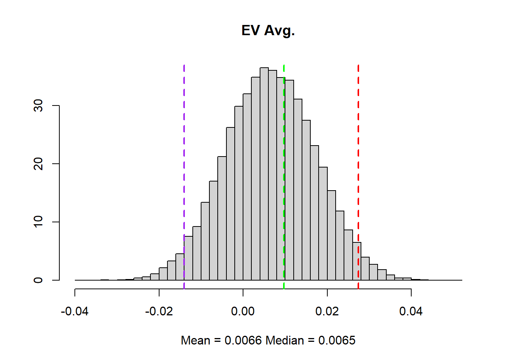
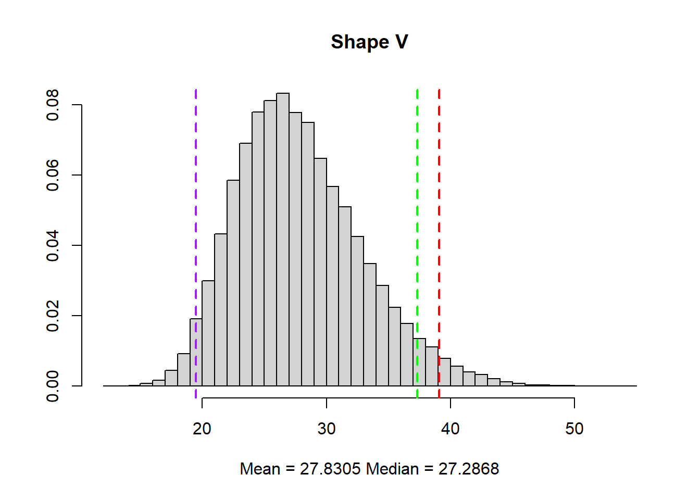

Intercept Batting Average EV Average v
-0.923390136 0.057963857 0.009712401 37.311308444 Predicting Pitching Data with an MCMC Algorithm
Can a pitcher’s ERA(estimated run average) be used to predict an opposing batter’s batting average and exit velocity? In this study, I’ll be using a Bayesian statistical model investigate the relationship between these variables in a regression-based analysis. By using a Bayesian framework, we can easily apply future baseball data to the predictive model.

Based on an initial look at ERA, it appears to have a roughly bell-shaped distribution with a strictly positive support. There are a few options I have for distributions that are positively continuous. For this study I will be fitting the ERA as a gamma variable. Below is a brief template of the pursued model.
Model for ERA where ERA==Y: \(Y_i \sim Gamma(v, \frac{\mu}{v})\), \(E[Y_i]=\mu, V(Y_i)=\frac{\mu^2}{v}\)
In this model, the parameters for the Gamma distribution are redefined so that the shape=\(v\) and the scale=\(\frac{\mu}{v}\)
Similarly to the previous model but with new parameterization, the mean model is as follows: \(log(\mu)=X\beta\):
\(Y_i \sim Gamma(v, \frac{e^{X\beta}}{v})\)
This will make the linear predictors multiplicative on the response.
The prior distribution of the \(\beta\)’s are given by:
\(\beta_p \sim N(0, \tau^2I_p)\), \(E[\beta]=0, V(\beta)=\tau^2I_p\)
For the parameter \(v\), we have the prior distribution:
\(v \sim Gamma(a_0, b_o)\), \(E[v]=a_0b_0, V(v)=a_0b_0^2\)
We could have also used an exponential model here, but we may lose valuable information by not fitting an additional parameter. Other positive continuous distributions, such as the log-normal and chi-square distributions tend to favor more skewed data, which is why I’ve elected to use the gamma model here. Additionally, there is additional flexibility when choosing a prior distribution for the shape \(v\). While I’ve decided to use a gamma prior for \(v\), an inverse-gamma or non-informative prior are also reasonable options here.
Estimation Procedure
I am interested in deriving the posterior distribution:
\(\pi(\beta,v|Y_1,...,Y_n)\)
This study will use a Markov Chain Monte Carlo method to approximate the posterior distribution of interest. More specifically, I am going to use a Metropolis-Hastings algorithm to draw samples from the posterior. The primary reason for this is that the conditional distribution of \(\beta\)(Normal) given \(Y_i\)(Gamma) cannot be derived reasonably by hand.
To conduct the procedure, we only need a couple of items:
1. The sample data
2. The distribution of the response variable (ERA)
3. The prior distributions for \(\beta\) and \(v\)
We will also need to specify distributions from which we will draw proposals from. For our \(\beta\)’s, a normal distribution will suffice as a proposal distribution. For \(v\), however, we need to be careful since it has the support \(v\in(0, +\inf)\). A gamma distribution will work for in this case.
Simulation Study
For each model, we divide the procedure into two major steps. The first step uses the MCMC algorithm on the actual data set. This will give us estimates for the parameters of the posterior distribution.
The second step will involve generating synthetic data using the estimated parameter values. This will allow us to evaluate the performance of the procedure by comparing the fitted distribution from the synthetic data to the estimates we obtained from the actual data.
Using the MCMC algorithm on the actual data, we retrieve these estimates for the parameters.
\(\beta_p\):
We have the effects on ERA from the intercept, batting average, EV average and gamma parameter \(v\). Based on these estimates, it would seem that the ERA increases by an average amount of 0.06 for each percentage increase in batting average. Exit velocity, on the other hand, seems to have a much smaller effect at about 0.01. To view the significance of these effects, that is whether or not they are useful predictors of ERA, we have the following confidence intervals.
Batting Average Confidence Interval:
Estimate Std.Error lower upper
Batting Average 0.05796386 0.006529977 0.04516534 0.07076238When the confidence interval is fully above or below zero, we have evidence of a significant effect. Based on this confidence interval (5% significance level), there seems to be an effect for batting average on the ERA.
EV Average Confidence Interval:
Estimate Std.Error lower upper
EV Average 0.009712401 0.009415376 -0.008741397 0.0281662We do not see evidence of an effect for exit velocity.
Shape \(v\) Confidence Interval:
Estimate Std.Error lower upper
v 37.31131 5.02998 27.45273 47.16989While we aren’t necessarily conducting tests for \(v\), this is a useful test to see if a gamma model is better suited for prediction than the exponential model. To elaborate, an exponential model is a special case of the gamma model where the shape \(v\) is equal to one. Here we can see that the parameter \(v\) was useful in this case.
Estimation Performance
Here we now use our MCMC algorithm on generated data to test it’s performance. The simulation procedure included generating the data from the statistical model, applying the MCMC algorithm to the data, and saving the samples. I decided to repeat this process 10 times for each model.
We have the following estimates from each run of the algorithm:
[[1]]
[1] -0.0260406860 0.0593674332 -0.0009286261 26.8696904063
[[2]]
[1] -0.917842042 0.058996389 0.009578318 24.080540792
[[3]]
[1] -0.2902557542 0.0647045094 0.0003293464 24.4489164768
[[4]]
[1] -1.29032874 0.05425564 0.01462497 34.00544895
[[5]]
[1] -0.237272494 0.054521730 0.003243972 31.958969334
[[6]]
[1] -0.97023338 0.05713295 0.01058874 24.65831609
[[7]]
[1] -1.45404830 0.05924097 0.01517381 27.28434448
[[8]]
[1] 0.0452646362 0.0553544215 -0.0005355802 31.2033184613
[[9]]
[1] -0.672979894 0.050604321 0.009155781 25.925490947
[[10]]
[1] -0.387288979 0.054683676 0.004556977 27.870432850Combined, the estimates for each parameter were:
[1] -0.620102563 0.056886204 0.006578771 27.830546879Lastly, we can also use histograms to view the distributions of each parameter given the synthesized data.




These histograms are modeled using the combined data from each run of the algorithm. The blue and red dotted lines represent the 0.025th and 0.975th quantiles respectively while the green line represents the mean derived from the Gamma model. Clearly, the variance for \(v\) was very high and the model struggled to capture it’s true value. On the other hand, however, we better captured the values for the batting average and EV average than we would’ve with an exponential model. To capture the shape \(v\) more accurately, I would need to address two elements. First would be the prior distribution, as the parameter values for the priors were not optimized. The other element to address would be the proposal distribution for \(v\) and the tuning scheme for the Metropolis Hastings algorithm. While the proposal distribution did center around the parameter value, the variance of that distribution was not optimized. The high variance of \(v\) hints that the tuning scheme may need to be tweaked for \(v\) individually.